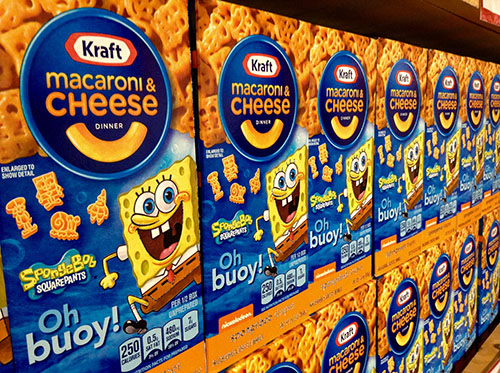

Mac and Cheese
Price: $1.25
Delicious
- Kraft Original Macaroni and Cheese Dinner is a convenient boxed dinner. Kids and adults love the delicious taste of macaroni with cheesy goodness. Our 7.25 ounce mac and cheese dinner includes macaroni pasta and original flavor cheese sauce mix, so you just need milk and margarine or butter to make a tasty mac and cheese dinner kids love. With no artificial flavors, no artificial preservatives, and no artificial dyes, Kraft macaroni and cheese is always a great family dinner choice. Preparing macaroni and cheese is a breeze. Just boil the pasta for 7-8 minutes, drain the water and stir in the cheese mix, milk and margarine or butter. Now you can have your Kraft mac and cheese and eat it too.
- One 7.25 oz. box of Kraft Original Macaroni and Cheese Dinner
- Kraft Original Macaroni and Cheese is a convenient boxed dinner
- Box includes macaroni noodles and original flavor cheese sauce mix
- Kraft mac and cheese contains no artificial flavors, no artificial preservatives, and no artificial dyes
- One box makes about 3 servings
- Boxed macaroni and cheese is a quick and easy dinner
- Cheese sauce mix is individually sealed
- SNAP and EBT eligible food item
This decriptive text is borrowed from